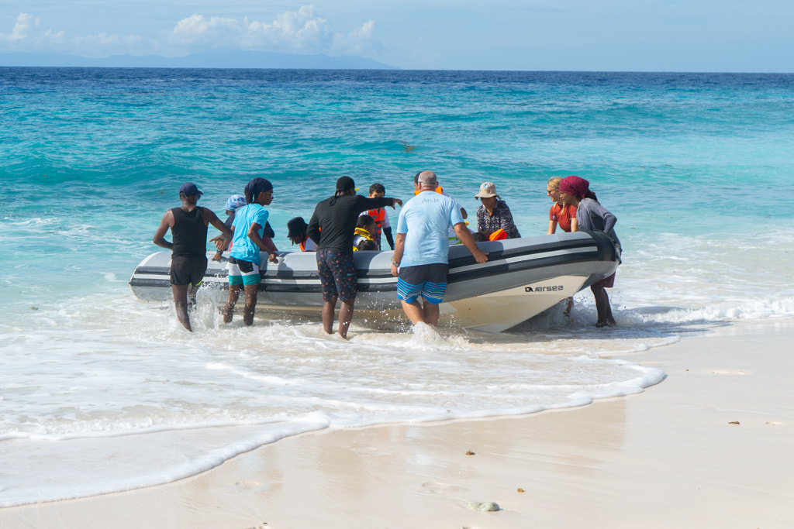
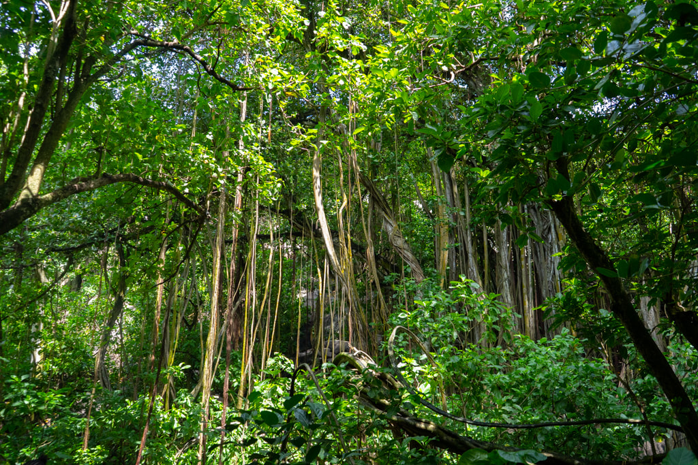
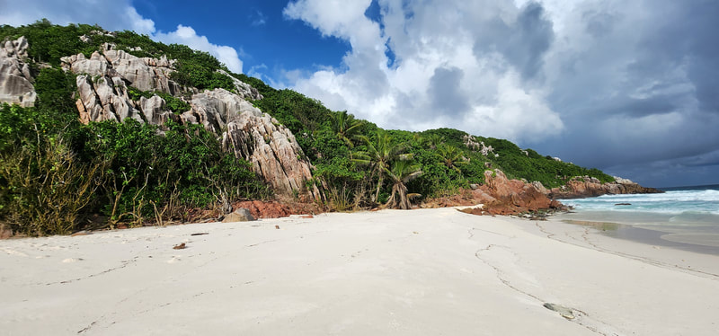
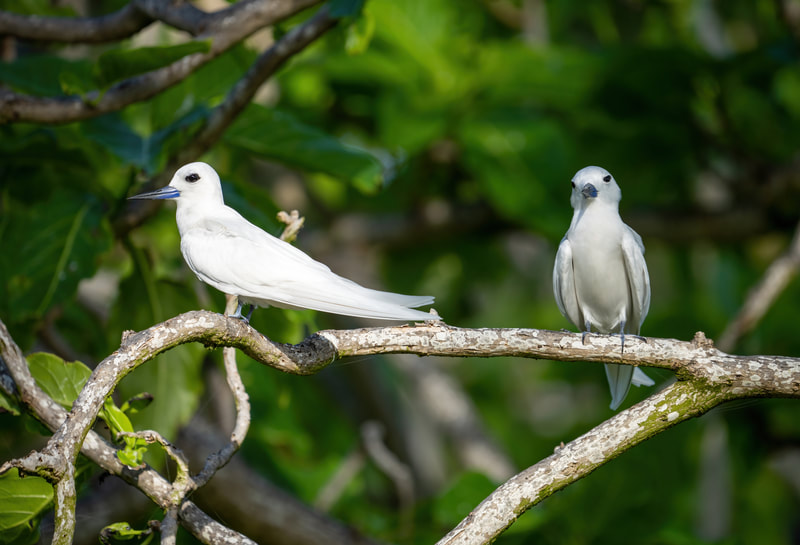
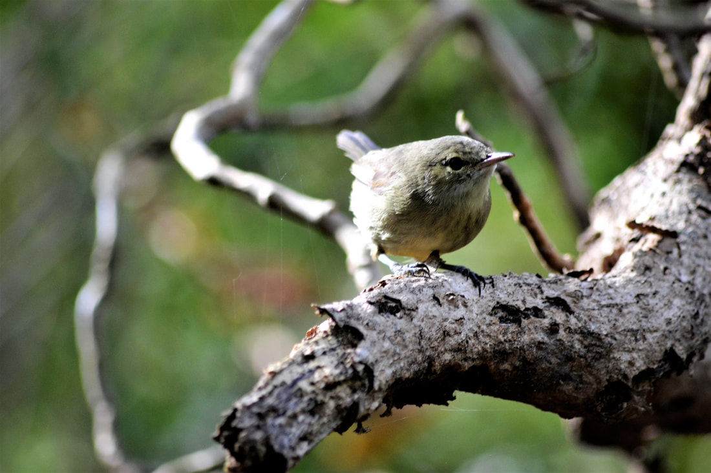
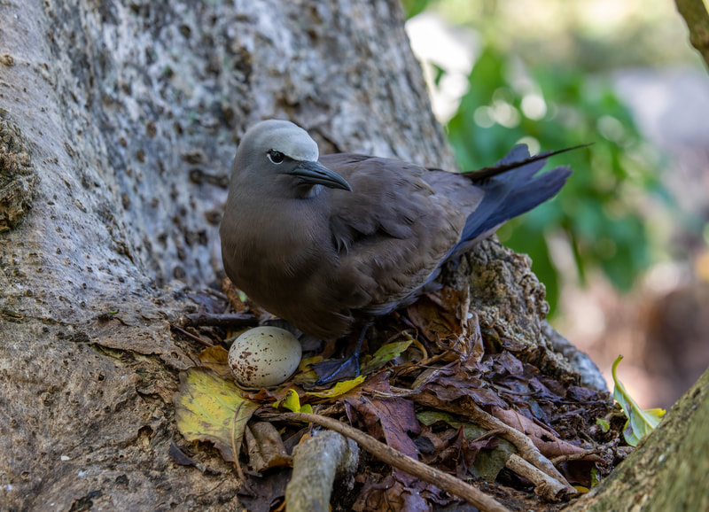
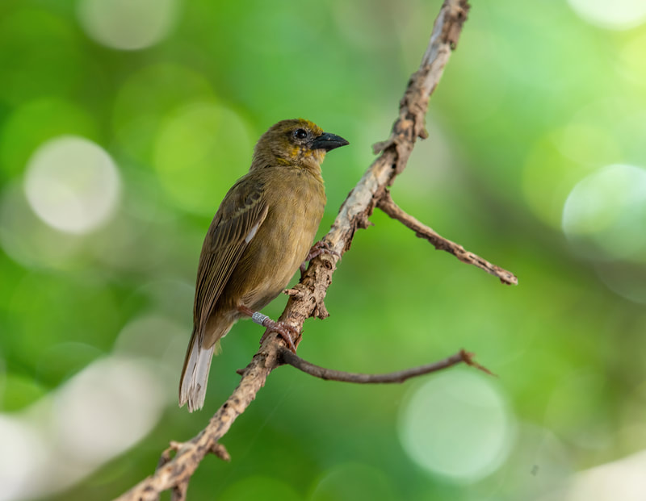

A RARE ISLAND, KEPT WILD
Some places
stay with you.
A visit to Aride is a journey into the Seychelles as it was before human settlement — a thriving sanctuary for seabirds, native forest and life found nowhere else.
Discover the island ↓WELCOME TO ARIDE
A window into
another Seychelles.
A visit to Aride Island is essential for any visitor to Seychelles to discover what the islands were like 250 years ago before human settlement.
Aride is the northernmost island of the granitic Seychelles. It covers roughly 68 ha, is 1.6 km long and 0.6 km wide. Aride hosts one of the most important seabird populations in the Indian Ocean with more breeding species than any other island in Seychelles.
The island is managed as a nature reserve by Island Conservation Society of Seychelles. The only human inhabitants are the reserve’s staff, including the Island Manager, Conservation Officer and rangers.
More about Aride ↗
AN ISLAND FULL OF LIFE
One of the finest nature reserve islands in the Indian Ocean
Explore the wildlife of Seychelles in our comprehensive galleries illustrating their unique flora and fauna above and below the waves.



Home to one of the world’s largest populations of two seabird species, five endemic land birds and the only naturally occurring population of Wright’s Gardenia.
Explore the wildlife galleries ↗
A LIVING RESERVE
Conservation guides all that we do.
Island staff monitor seabirds, endemic land birds, turtles, native vegetation and the marine ecosystem. They guard against invasive species, restore natural habitats, support research and share the importance of conservation with visitors.
What we do ↗Special Reserve
MAKE THE CROSSING
Come ashore.
Leave it wild.
Experience Aride with the people who care for it. Guided visits bring you close to the island’s remarkable wildlife while helping protect its fragile ecosystems.
- 01October to MayVisitor season, weather permitting
- 02Book aheadAdvance booking is essential
- 03Arrive with Aride boatsAccess is restricted to authorised boats

THE ISLAND CONSERVATION SOCIETY
Keep a rare place thriving.
We are a conservation NGO based in Seychelles running programmes on several islands. We protect and rehabilitate the unique natural heritage of our islands. Plan your visit, support our work or come to volunteer on our islands.
MAKE A DIFFERENCE TODAY
Help keep Aride wild.
Donations help maintain monitoring and conservation activities on the island. Give once or monthly through Island Conservation Society UK on JustGiving.
Donate to Aride ↗Secure giving hosted by JustGiving